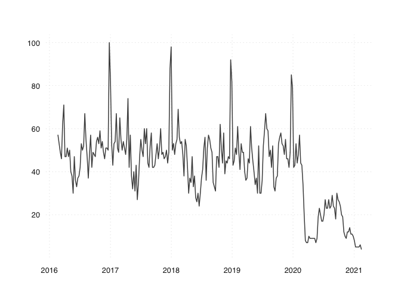

Create Daily Series from Google Trends
This package contains R code to construct long daily time series from Google Trends. Robustness of the data is achieved by querying Google mulitple times. The queries are sampled at daily, weekly and monthy frequencies and then harmonized such that the long term trend is preserved. The download itself relies on the gtrendsR package by Philippe Massicotte and Dirk Eddelbuettel.
The website www.trendecon.org applies the package and provides a set of indicators for Switzerland and is updated daily. During the Covid-19 pandemic, such high-frequency indicators have been in high demand. We use Google search trends to create meaningful indicators that don’t suffer from this problem. In particular, we extract daily search data on keywords reflecting consumers’ perception of the economic situation.
The project was inititated during the #versusvirus and got funding from the hackathon.
Installation
You can install the trendecon package from GitHub.
# install.packages("remotes") remotes::install_github("trendecon/trendecon")
Usage
To download a series from Google Trends:
library(trendecon) x <- ts_gtrends("cinema", geo = "CH") #> Downloading data for today+5-y tsbox::ts_plot(x)

Documentation
The introductory vignette describes the basic use of the package.
To create and update long daily series from Google Trends, see the vignette on daily series.